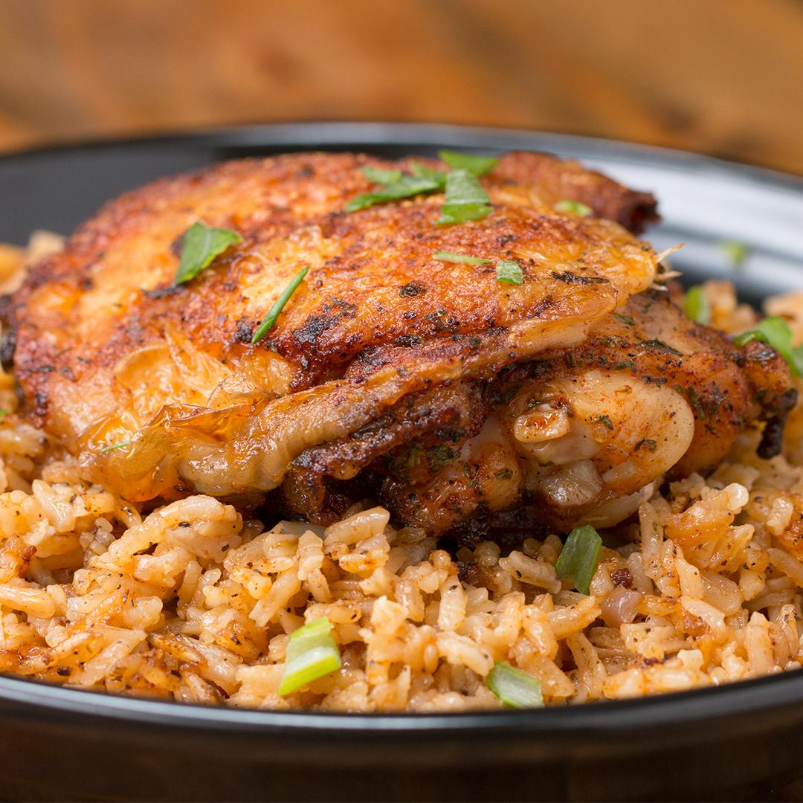

Chicken and Rice

Description
This classic gym-goers meal.
Both filling and great for muscle growth!
Ingredients
- 250g of Chicken Breast
- 100g of White Rice
- Salt & Pepper
- Variety of spices
Steps
- Soak 100g of dry white rice in a container for at least 30 minutes.
- Whilst the rice soaks, slice lines into the chicken breast.
- Apply salt, pepper, and the selection of spices you chose to the chicken.
- Leave the chicken to absorb the flavour for 10 minutes.
- Preheat air-fryer to 190c for 3 minutes
- Whilst preheating, drain the rice with a colander into the sink. Then place into the rice cooker with a pinch of salt.
- Cook the chicken in the air fryer for 20 minutes at 190c.
- Whilst the chicken cooks, let the rice cooker boil the rice.
- Once all is cooked place the chicken on top of the rice in a bowl.